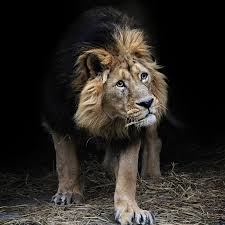

Living in the grasslands, scrub, and open woodlands of sub-Saharan Africa, the lion is the second largest cat in the world. It is dwarfed slightly by the tiger, which is closely related and has a very similar body type.
It is our Home
African lions are considered vulnerable of extinction by the IUCN Red List. They are threatened by loss and fragmentation of habitat. They are also killed by humans in bravery rituals, as hunting trophies, for medicinal powers, or by ranchers protecting their livestock. Furthermore, they are susceptible to tick-borne diseases like canine distemper and babesia. Distemper is spread to lions by neighboring village dogs as well as hyenas. Babesia occurs during droughts, when malnourished prey is vulnerable to disease. The ticks spread to the lions after they kill the sick animal. The combination of distemper and babesia causes mass fatalities in lion populations.
This is their home
Lions on circus
The lion cub that was found in a field near Tienhoven on Sunday had been offered to an animal sanctuary in Friesland on the preceding Friday, RTL Nieuws reports. The Stichting Viervoeters in Nijeberkoop was contacted by an anonymous caller and asked to pick up the animal in Utrecht. However, it could not take the cub in because it is against safety rules to take in unlicenced animals
